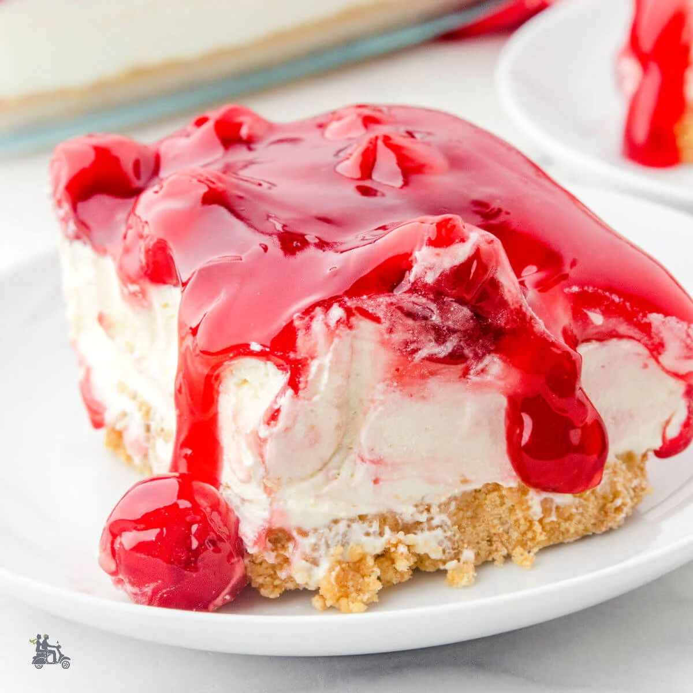

Cherry Dessert

Delicious Cherry Dessert
Simple and Wonderful
Try this recipe for cherry dessert made with a graham cracker crust, creamy middle layer, and fruity topping. It is a simple but wonderful treat.
Ingredients
- 1 ¼ cups graham cracker crumbs
- ¾ cup margarine, melted
- 1 (8 ounce) package cream cheese
- ½ cup white sugar
- 1 dash vanilla extract
- 1 dash almond extract
- 1 cup heavy cream
- 1 (12 ounce) can cherry pie filling
Steps
- Preheat the oven to 350 degrees F (175 degrees C). Grease a 9-inch pie dish.
- Combine graham cracker crumbs and melted margarine in a small bowl; stir well and press into the prepared baking dish.
- Bake in the preheated oven for 5 minutes. Place in the refrigerator to cool.
- Meanwhile, beat cream cheese, sugar, vanilla, and almond extract in a large bowl with an electric mixer until smooth. Whip cream in a medium bowl until stiff peaks form; fold into cream cheese mixture. Spread over cooled crust.
- Dot top with cherry pie filling; smooth with a knife or spatula to cover. Chill in the refrigerator until serving.